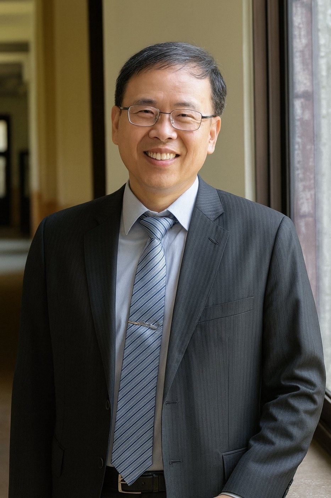
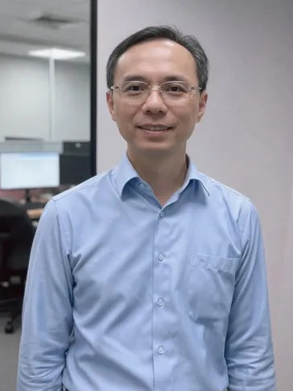
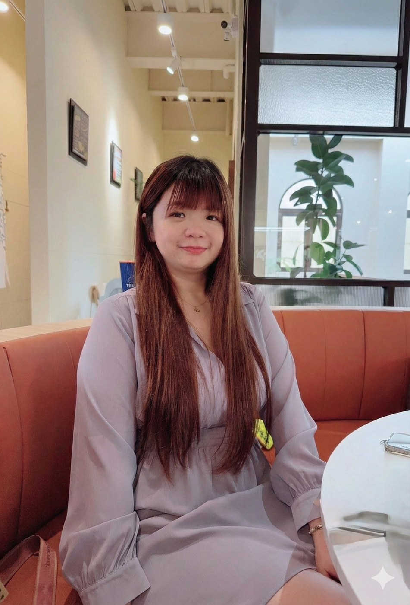
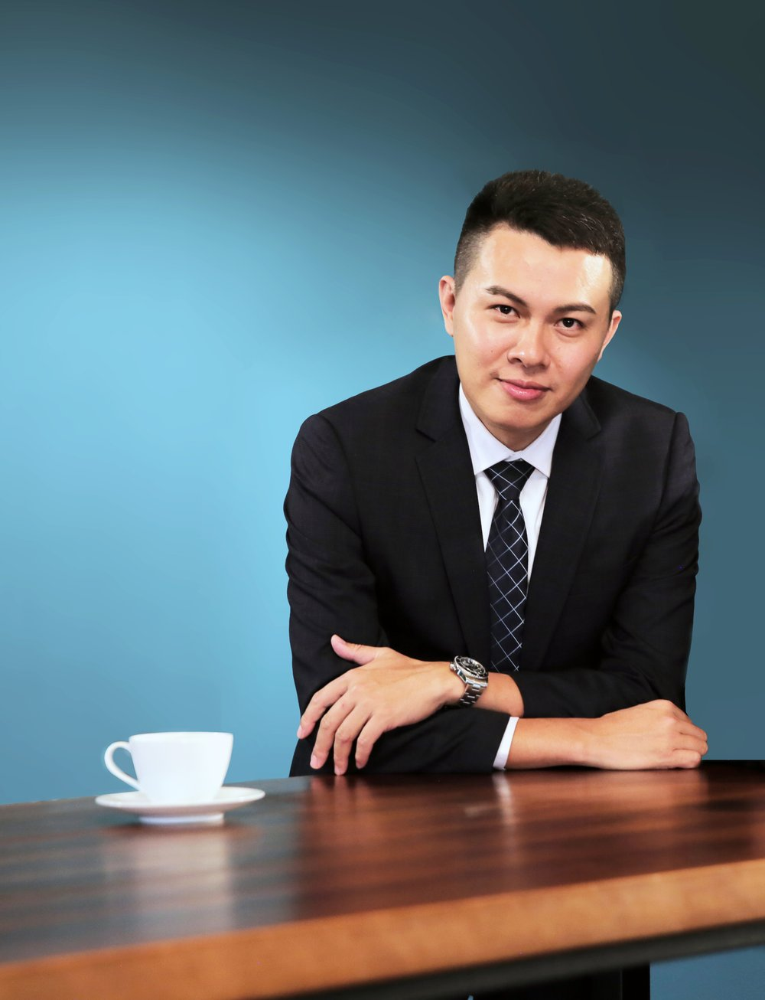

多數中小企業的痛點，不是缺乏努力，而是缺乏「可被檢驗」的系統。當營運仰賴個別人員的經驗與直覺，組織的成長就被天花板鎖死。
STATON 相信，一家企業的真正韌性，建立在可重複、可衡量、可修正的制度上。我們不販售一次性的建議，而是為你打造一套會自己運轉的經營骨架——從人性出發，用誘因驅動，藉檢查校準。
我們的長期目標：協助 100,000 家中小企業，從仰賴個人，走向仰賴系統。
STATON 將企業營運的關鍵命脈拆解為六個可獨立優化、亦可整合運作的顧問模組。從組織架構、營運流程到管報、財務、品牌與法遵，每個模組皆內建「診斷 → 執行 → 驗證」三層機制，確保改變能落地、效益能被衡量。
協助企業優化組織架構，依規模、產業特性與發展階段，選擇最適合的職能型、事業部型或矩陣型架構，確保部門層級與職責分工最適化。
檢視並優化營運流程，導入 ERP、SaaS、AI 工具進行流程重整與自動化；建立資訊儀表板與跨部門協作機制，讓營運效率長期落地。
提供企業專屬管理報表設計，匯總財務與營運數據形成單一決策依據；將關鍵指標視覺化，建立動態追蹤與異常預警機制。
建立穩健的財務管理機制，從年度與滾動預算編制控管，到資金調度效率提升；透過關鍵數據分析支援經營決策，保障資金運用效率。
從定位到行銷落地，協助企業建立具影響力的品牌。明確目標市場與品牌價值，制定整合線上線下管道的行銷計畫，並透過數據檢視成效。
建立制度化的法務與合規體系，降低經營風險。從契約審閱、風險識別、應對措施到法遵制度建置，確保企業營運符合法規與產業規範。
當企業跨越穩定經營門檻，下一個關卡是「資本市場」與「策略性併購」。STATON 與會計師、券商、律師組成跨專業協作團隊，協助企業在 IPO 或 M&A 旅程中，建立完整 Roadmap、整合資源、控管成本，把成長翻譯為股東價值。
協助企業從成長階段邁向資本市場 IPO，從策略規劃、時程管理到團隊整合，逐步打造能承受公開市場檢驗的組織體質。
透過併購策略加速成長、優化資源配置，並提升整體企業價值。從前期標的篩選，到交易架構設計與交割執行，提供全程顧問支援。
STATON 的核心方法論，源自一條結構化的人性框架：人性 → 誘因 → 分配 → 檢查 → 修正。我們把它濃縮成三層可被反覆操作的工序——讓改變不再是「上完課就忘」的提案，而是會自我運轉的系統。
先理解，再動手。透過結構化訪談、財務拆解、流程地圖與痛點訪查，把模糊的「感覺有問題」轉譯為可被處理的具體議題。
設計可被操作的制度與工具。所有提案都會落地為文件、流程、表單或 KPI，並指派具體負責人與時間表，讓改變從會議桌走到工位上。
改變要被衡量，才不會回到原點。我們建立週期性的檢查節點與量化指標，把回饋寫進制度，讓系統具備自我修正能力。
STATON 不是個人顧問工作室，而是由創辦人領銜，結合會計、稅務、法律、資本、行銷與產業實戰的策略合夥人共同組成。每一個顧問模組背後，都有對應領域、十年以上資歷的專業夥伴與你並肩作戰。




我們相信，顧問服務的價值，最終要體現為可被檢視的數字。以下是 STATON 的服務範疇、長期願景與專業背景。
本公司由 H&W LAW 伯衡法律事務所提供常年法律顧問支援，所有制度設計皆內含法律風險審查，把財務、營運與法律編織成同一張安全網。
創辦人具備 Ernst & Young 安永聯合會計師事務所經歷，將四大會計師事務所的標準化專案管理思維，轉譯為中小企業可承受的顧問語言。
我們不交付投影片就離場。每個專案都會落地為可被操作的文件、表單、流程與 KPI 監控機制，並指派具體負責人，讓改變被內建在組織中。
創辦人本身亦為事業經營者，深度理解中小企業在現金流、人才、決策節奏上的真實限制。我們不套用大企業模板，而是設計合身的解法。
每一段顧問關係，都有清楚的起點、節點與終點。STATON 以五個固定節點，確保你在任何時刻都知道「我們在哪裡、下一步是什麼」。
免費 60 分鐘對談，理解你的經營現況、痛點與期待，雙方確認合作可能性。
2–4 週深度訪查與資料分析，產出書面診斷報告與優先序建議。
依優先序設計具體模組、時程、KPI 與資源配置，產出可執行的藍圖。
陪伴式導入，協助制度上線、訓練同仁、調校細節，確保系統真的運轉起來。
每月 / 每季回顧，依數據反饋修正系統，讓制度具備自我進化的能力。
無論你的事業正處於起步、擴張或轉型的階段，
我們都樂於與你進行一場無壓力的初訪對談。
先理解你，再給承諾。